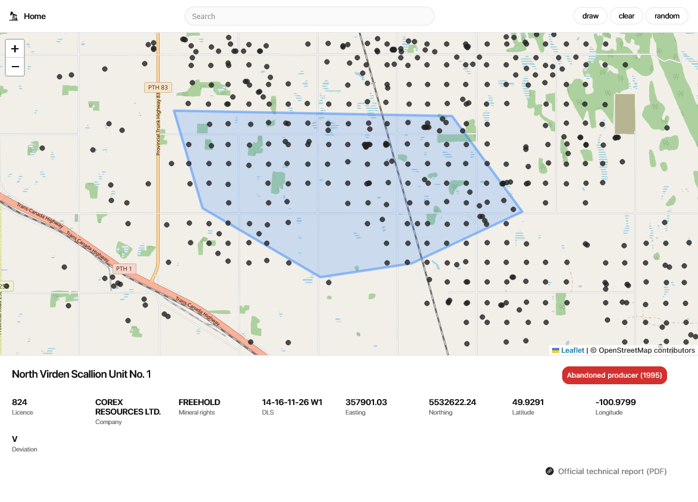

A GIS-Based Spatial Analysis of Manitoba Oil Well Development
2025An interactive GIS system for analyzing oil well development across Manitoba. Combines spatial queries, polygon analysis.
Software Developer, focused on backend, geospatial, and analytical systems.
I work at the intersection of research-oriented computing and practical software engineering.
I’ve contributed to academic environments through applied research tools, conferences, and teaching assistance,
while independently and collaboratively building production-grade software systems across multiple domains,
including geospatial analysis, energy data, accounting workflows, and mobile applications.
I’m deeply technical and motivated by understanding first principles. I enjoy designing systems from the ground up and exploring how abstract ideas translate into real constraints. Currently, I’m focused on data-intensive systems, visualization, and applied software design. I'm always looking for opportunities to learn, build, and grow in the tech field!
Outside of work, I enjoy reading about history, philosophy, and technology trends.
I work primarily in: Java, Kotlin, JavaScript, Python, and SQL
An interactive GIS system for analyzing oil well development across Manitoba. Combines spatial queries, polygon analysis.

A lightweight communication and coordination app for roommates, focused on shared spaces, tasks, and accountability.
A live queue system with video call designed to streamline office hours, improving accessibility and efficiency for both instructors and students.
A live, session-based note-taking app where one person types and everyone else follows in real time.

A Java-based 2D dungeon game with sprite rendering and text-defined tile maps. Features key collection, door unlocking, and basic collision handling. Designed to explore game state management and simple engine architecture.

An interactive Dijkstra algorithm visualizer implemented in React. Uses grid nodes, weighted edges, and animated state transitions.